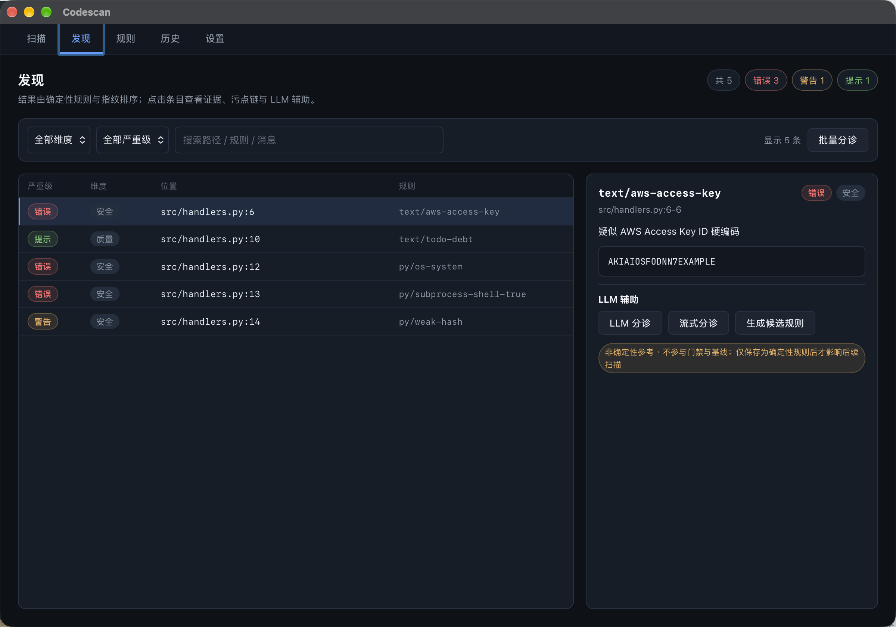
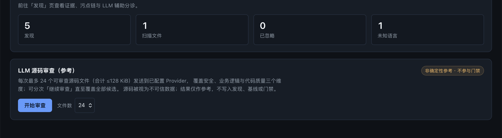

Deterministic by construction
Same files, same enabled rule set, same engine version — identical findings and events, every time. Fingerprints stay stable when lines drift.
Local-first · Deterministic · Self-contained
CodeScan pairs a self-built AST rule engine (tree-sitter) with a Tauri 2 desktop app and a headless CLI. It covers security, business logic and code quality — with no external scanner, no telemetry, and scans that never touch your files.

Why
Security and quality issues can be expressed as rules. Ownership checks, state transitions, amount math and idempotency cannot — they live in invariants only the project owner knows. CodeScan makes that boundary explicit instead of hiding it behind a generic scanner.
Same files, same enabled rule set, same engine version — identical findings and events, every time. Fingerprints stay stable when lines drift.
Write a business rule as YAML, test it with fixtures, and it behaves exactly like a built-in rule — same engine, same tooling, same gate.
Triage and review results are labelled advisory and stay out of findings, baselines and gate diffs. Only validated, explicitly saved rules affect later scans.
Features
Tree-sitter patterns, text patterns, metric thresholds and taint source→sink rules — compiled, versioned, unit-tested as assets.
Cyclomatic complexity, function length, nesting depth, duplicate blocks and unreachable code, with thresholds you control.
Intra-procedural approximation plus explicit-import cross-file propagation, with points-to object sets and field sensitivity.
Freeze a scan as a baseline, then block only newly introduced findings. Fingerprint equality, nothing else.
One-to-one with internal findings, carrying the degraded marker. Upload straight to GitHub Code Scanning.
Scan, Findings, Rules, History and Settings — with rule toggles, baseline management, SARIF export and history cleanup.
Per-finding triage, streaming triage, batch triage, paged workspace source review and candidate rule generation with isolated regression.
codescan scan with text/json/sarif output, exit codes for gating, and a GitHub Code Scanning uploader.
Coverage
Every finding belongs to exactly one dimension, and the dimension is declared by the rule — never inferred at runtime.
Dynamic execution, shell injection, weak hashing, hardcoded credentials, unsafe deserialization.
Ownership checks, state transitions, idempotency — the built-ins are examples; your invariants are the real coverage.
Complexity, function length, nesting depth, duplicate blocks, unreachable code and TODO debt.
Interface

Screenshots come from the intentionally vulnerable examples/demo-workspace/ in the repository. The desktop UI is currently Chinese-only; the CLI, README and docs/en/ are English.
Get started
.dmg from Releases.macOS Apple Silicon build.
git clone https://github.com/amuluze/codescan.git
cd codescan
pnpm install
pnpm tauri devNode ≥ 22 · pnpm ≥ 10 · Rust 1.96
# establish a baseline once, commit it
codescan scan . --save-baseline baseline.json
# block only newly introduced findings
codescan scan . \\
--baseline baseline.json \\
--fail-on new \\
--format sarif --out codescan.sarifExit codes: 0 clean · 1 gate hit · 2 usage or runtime error. See CLI reference.
Architecture
The desktop app and the CLI are two shells around the same deterministic engine: identical rule set, identical fingerprints, identical baseline semantics.
Privacy
Nothing is written into the scanned workspace. History, baselines and rules go to CodeScan's own data root; exports require an explicit action.
No usage reporting, no crash analytics, no third-party fallback. The engine has no network dependency at all.
An API key is stored in a Rust-owned SQLite secrets table. No command returns key material, and keys never reach logs, findings, errors or exports.
LLM traffic only reaches the base URL you configure. The token for SARIF upload is read solely from GITHUB_TOKEN.
Open source
CodeScan is MIT licensed. Domain invariants, task specs and implementation plans live in the repository, so every design decision can be reviewed and challenged.